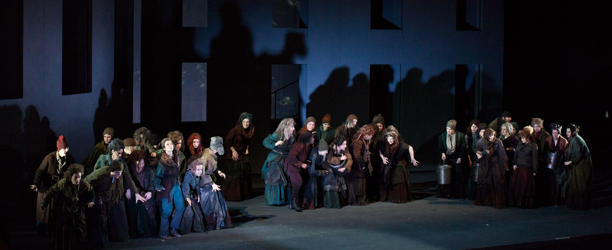
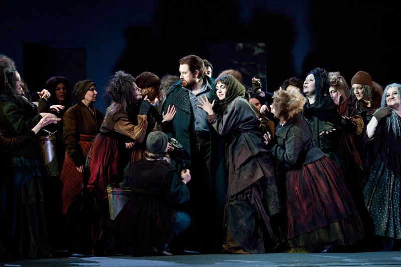
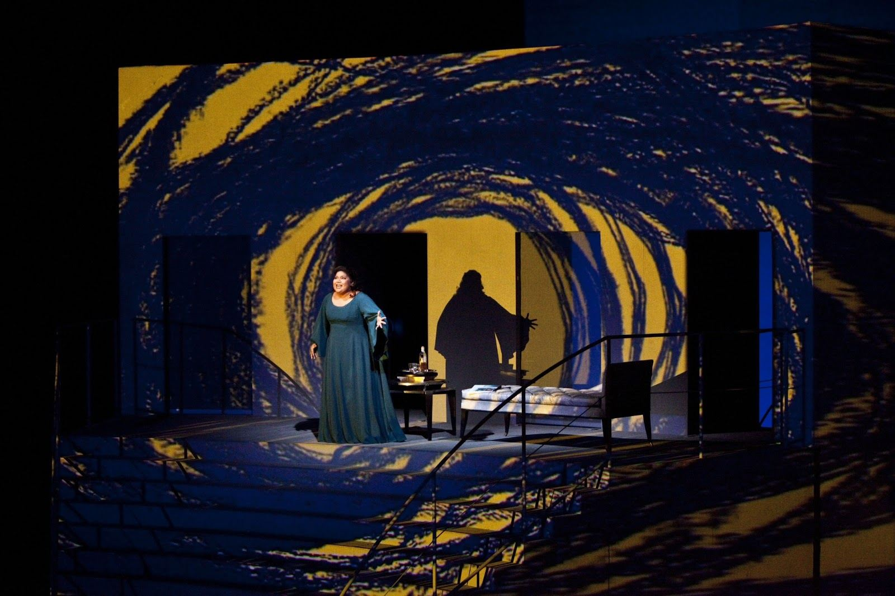

Macbeth di Verdi con la regia e le scene di Cristian Taraborrelli. Un allestimento che indaga le profondità oscure del potere e dell'ambizione attraverso una scenografia di forte impatto drammatico.
Verdi's Macbeth directed and designed by Cristian Taraborrelli. A production that explores the dark depths of power and ambition through set design of powerful dramatic impact.
Macbeth de Verdi mis en scène et décoré par Cristian Taraborrelli. Une production qui explore les profondeurs obscures du pouvoir et de l'ambition à travers une scénographie d'un fort impact dramatique.
Gallery




Tags